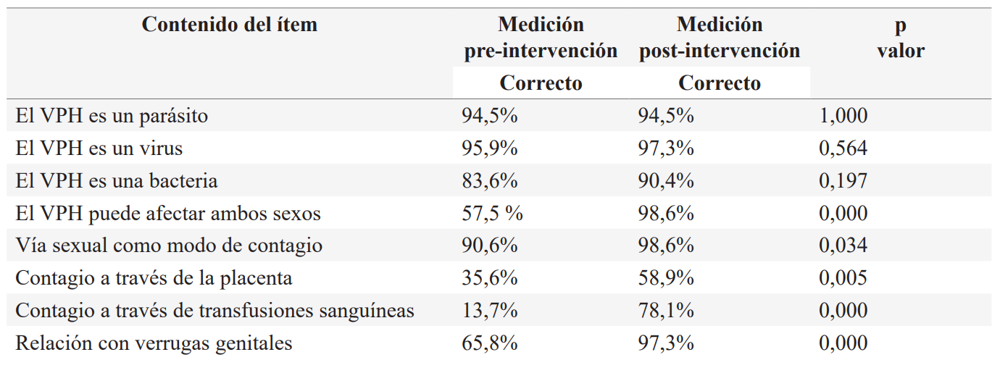
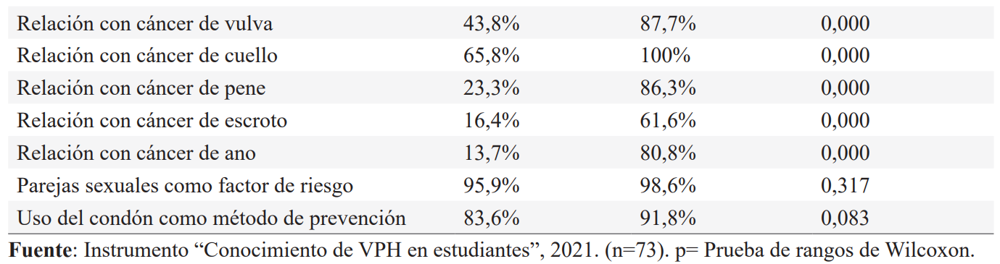

ISSN-PRINT 1794-9831 / E-ISSN 2322-7028
Vol. 19 Nº 3 / sep - dic, 2022 / Cúcuta, Colombia
ISSN-PRINT 1794-9831 / E-ISSN 2322-7028
Vol. 19 Nº 3 / sep - dic, 2022 / Cúcuta, Colombia
Resumen
Objetivo: Evaluar el efecto de una intervención educativa en el conocimiento sobre el Virus del Papiloma Humano en universitarias. Material y métodos: Estudio cuantitativo y preexperimental. Al efecto se realizó una intervención educativa virtual fundamentada en el modelo Freireano de la Educación liberadora a estudiantes universitarias, elegidas con un muestreo aleatorio simple, mediante participación voluntaria. Se utilizó como instrumento el alfa de Cronbach de 0,768 para medir el conocimiento pre-intervención y post-intervención. También, se empleó estadística descriptiva e inferencial; los datos fueron analizados con la prueba de rangos de Wilcoxon y el coeficiente de correlación de Spearman. Resultados: Se evaluó a un total de 73 estudiantes de la licenciatura en nutrición, cuya mediana de la edad fue de 19 años. El 49,3% ya había iniciado su vida sexual al momento del estudio. Antes de la intervención el 46,6% tuvo un nivel de conocimiento bueno; y, posterior a la intervención el 75,3% tuvo un nivel excelente (p=0,000). No existió relación estadísticamente significativa entre el conocimiento y la edad (p=0,757), ni con el conocimiento y el semestre (p=0,458). Conclusión: La intervención educativa demostró tener un efecto positivo estadísticamente significativo en el conocimiento sobre el VPH por parte de las universitarias.
Palabras Claves: Mujeres; Enfermería; Educación en salud; Infecciones por papilomavirus; Adulto joven.
Abstract
Objective: Evaluate the effect of an educational intervention about knowledge on Human Papilloma Virus in university female students. Material y methods: Quantitative and pre-experimental study. For this purpose, a virtual educational intervention was carried out with female students, based on the Freire’s educational model of Education for freedom. The Cronbach’s alpha instrument of 0,768 was used to measure pre-intervention and post-intervention knowledge. Also, descriptive and inferential statistics were applied; the data were analyzed through the Wilcoxon signed-rank test and the Spearman’s rank correlation coefficient. Results: A total of 73 undergraduate nutrition students were evaluated, with a median age of 19 years. At the moment of the study, 43,9% had already started their sexual life. Before the intervention 46,6% had a good level of knowledge; after the intervention, 75,3% had an excellent level (p=0,000=). The was no statistically significant correlation between knowledge and age (p=0,757), nor between knowledge and semester (p=0,458). Conclusion: The educational intervention showed a statistically significant positive effect on HPV knowledge in university female students.
Keywords: Women; Nursing; Health education; HPV infections; Young adult.
Resumo
Objetivo: Avaliar o efeito de uma intervenção educacional sobre o conhecimento sobre o Papilomavírus Humano em estudantes universitários. Material e métodos: Estudo quantitativo e pré-experimental. Para isso, foi realizada uma intervenção educativa virtual baseada no modelo freireano de liberação da educação para os universitários, escolhidos com amostragem aleatória simples, por meio da participação voluntária. O alfa de Cronbach de 0,768 foi utilizado como instrumento para medir o conhecimento pré-intervenção e pós-intervenção. Também foram utilizadas estatísticas descritivas e inferenciais; os dados foram analisados com o teste de Wilcoxon e o coeficiente de correlação de Spearman. Resultados: Foram avaliados 73 alunos do bacharelado em nutrição, cuja idade mediana foi de 19 anos. 49,3% já haviam iniciado sua vida sexual no momento do estudo. Antes da intervenção, 46,6% tinham bom nível de conhecimento; e, após a intervenção, 75,3% apresentaram excelente nível (p=0,000). Não houve relação estatisticamente significante entre conhecimento e idade (p=0,757), nem entre o conhecimento e o semestre acadêmico (p=0,458). Conclusão: A intervenção educacional mostrou ter efeito positivo
Palavras-chave: Mulheres; Enfermagem; Educação em saúde; Infecções por papilomavírus; Adulto jovem.
Autor de correspondencia*
1* Lic. en
Enfermería. Universidad Autónoma de Aguascalientes. Enfermera adscrita al Hospital General ISSSTE.
Aguascalientes, México.
al219051@edu.uaa.mx,
Lic. en
Enfermería. Universidad Autónoma de Aguascalientes. Enfermera adscrita al Hospital General ISSSTE.
Aguascalientes, México.
al219051@edu.uaa.mx,  0000-0003-3792-7224
0000-0003-3792-7224
2*Lic. en
Enfermería. Universidad Autónoma de Aguascalientes. Pasante de Servicio Social de Enfermería del
Centenario Hospital Miguel Hidalgo. Aguascalientes, México.
al219965@edu.uaa.mx, 0000-0002-4157-2342
3*Lic. en
Enfermería. Universidad Autónoma de Aguascalientes.
Pasante de Servicio Social del Departamento de Enfermería de la UAA.
Aguascalientes, México.
al237952@edu.uaa.mx, 0000-0001-6168-7780
4*Lic. en
Enfermería. Universidad Autónoma de Aguascalientes. Pasante de Servicio Social
de la UMA 1 IMSS. Aguascalientes, México
al242150@edu.uaa.mx, 0000-0002-4622-5753
5*Lic. en
Enfermería.
Universidad Autónoma de
Aguascalientes. Pasante de Servicio Social de la UMA 7 IMSS.
Aguascalientes, México.
al219142@edu.uaa.mx, 0000-0001-9189-0106
6*Mtro. en
Ciencias de Enfermería, Docente del departamento
de Enfermería de la Universidad
Autónoma de Aguascalientes.
Enfermero adscrito al Hospital
General de Pabellón de Arteaga.
Aguascalientes, México.
ramiro.altamira@edu.uaa.mx, 0000-0003-3403-6901
Recibido: 30 marzo 2022
Aprobado: 20 junio 2022
Para citar este artículo / To reference this article / Para citar este artigo: Chávez-Morales MG, Carranza-Guardado JP, Vásquez-delaCruz LC, Cardona-Zambrano FE, Quezada-Oliva EA, Altamira CR.Efecto de una intervención educativa en el conocimiento sobre VPH en universitarias. 2022; 19(3):10-20. https://doi.org/10.22463/17949831.3317
© Universidad Francisco de Paula Santander.
Este es un artículo bajo la licencia CC-BY-NC-ND

Introducción
Cada día, más de un millón de personas contraen una enfermedad de transmisión sexual (ETS) a nivel mundial (1). El virus del papiloma humano (VPH) es la ETS más frecuente en el mundo, aproximadamente el 80% de los individuos tendrán contacto con este virus en el transcurso de sus vidas (2). Se estima que más de 290 millones de mujeres en el mundo están infectadas por el VPH (1). La infección por VPH es asintomática en la mayoría de los casos; sin embargo, puede ocasionar síntomas leves o complicaciones importantes en la salud, la más destacable de ellas es el cáncer cervicouterino (3). En México, constituye un problema grave de salud, ya que el cáncer cervicouterino ocupa el segundo lugar en neoplasias de la mujer (4).
Aunque el VPH afecta a hombres y mujeres, la mayor incidencia de esta infección se encuentra en mujeres de 15 a 24 años (5). Cabe destacar que las mujeres jóvenes presentan un riesgo mayor de contraer enfermedades de transmisión sexual que jóvenes varones, este riesgo está asociado a prácticas sexuales poco seguras, a menudo no deseadas y realizadas por imposición (6).
Existe un bajo conocimiento sobre el Virus del Papiloma Humano en la población en general (3,7–9). De acuerdo con diferentes investigaciones realizadas sobre el nivel de conocimiento en universitarios se ha concluido que en este grupo poblacional existe un bajo conocimiento sobre este virus. También se demuestra que la mayor parte de los universitarios desconocen los factores de riesgo, transmisión, detección, complicaciones y prevención de la infección por VPH (7); además prevalecen conductas de riesgo (10), lo que los convierte en un grupo de riesgo, al no tomar las medidas de prevención necesarias (11). Por lo anterior, las investigaciones recomiendan la creación de intervenciones dirigidas a los jóvenes debido a su posición de vulnerabilidad ante esta problemática (12).
Desde este punto de vista, las intervenciones educativas deben informar y concientizar sobre temas relevantes en salud, proponer practicas saludables, así como estimular una mejor calidad de vida para lograr un desarrollo integral de la persona (13).
Hay que mencionar además, que la Educación para la Salud con un enfoque integral tiene como objetivos el ejercicio de la ciudadanía, la transformación social y la construcción colectiva de la salud; para lograrlo se utilizan los modelos educativos de un nuevo paradigma, en donde la educación es activa, crítica, participativa y transformadora (14, 15). Bajo este paradigma se encuentra la “Educación liberadora” de Paulo Freire, en donde el conocimiento se construye entre los educadores y los participantes, mediante el diálogo como herramienta principal (16).
La educación liberadora se basa en la educación para adultos; también se centra en los participantes como sujetos activos en su aprendizaje y rechaza la idea de volverlos solo receptores de información; igualmente, promueve el pensamiento crítico y se desafía a pensar (15,17-19). Además, la finalidad del modelo es generar conciencia sobre las problemáticas y la capacidad de leer el mundo, para asociar la experiencia de aprendizaje con la cotidianidad, mediante una percepción crítica del contexto, con el objetivo de que los participantes logren satisfacer sus necesidades y den soluciones a los problemas de su entorno (16-19).
Para que las personas puedan cambiar la forma en que leen su realidad y emprendan acciones de transformación, tienen que pasar por tres fases. Inicialmente se encuentran en una fase mágica, donde no resuelven los problemas al no ser percibidos; luego se presenta una fase ingenua, en donde se identifican de manera individual y comienzan cambios de forma personal; y finalmente hay una fase crítica, en la que se reflexiona sobre los problemas de manera comunitaria, se concientiza y se motiva a realizar cambios colectivos. Para lograr su objetivo, el modelo educativo Freireano aparece en tres momentos: “investigación de los medios de vida”, “tematización, codificación y decodificación” y “problematización que se orienta a la concientización” (18). Actualmente y debido a la necesaria separación física, entre instructores y participantes, se utiliza una modalidad de enseñanza virtual. Esta modalidad contribuye a la innovación de la enseñanza centrándose en el participante, lo que permite un proceso educativo más individualizado (19,21).
Objetivos
Objetivo general
Evaluar el efecto de una intervención educativa virtual sobre el conocimiento de VPH en universitarias.
Objetivos específicos
Material y métodos
Estudio cuantitativo, preexperimental y longitudinal . Se utilizó una muestra aleatoria realizada en las licenciaturas del Centro de Ciencias de la Salud, eligiendo la licenciatura en Nutrición para la aplicación de una intervención educativa sobre VPH a las estudiantes mujeres . El tamaño de la muestra fue de 96 participantes (IC 95%, R 15%). Las participantes se eligieron mediante un muestreo aleatorio simple con reemplazo. Se incluyeron mujeres con edades comprendidas entre 18 y 25 años , quienes aceptaron participar en la investigación y recibir la intervención. Además, se excluyeron las universitarias que hubieran recibido anteriormente una intervención educativa del tema, tampoco se incluyeron en los resultados a las participantes que abandonaron la intervención.
Instrumento
Se empleó un instrumento de medición de conocimientos sobre VPH diseñado y previamente utilizado en universitarios mexicanos, con un alfa de Cronbach de 0.768 (9), dividido en tres partes: datos generales, preguntas opcionales sobre conductas sexuales y 15 ítems sobre el conocimiento. El nivel de conocimiento se determinó mediante una escala de valoración según las respuestas correctas y el número de preguntas, en las siguientes categorías: Insuficiente de 1 a 3, regular de 4 a 6, bueno de 7 a 9, muy bueno de 10 a 12 y excelente de 13 a 15. Las participantes contestaron el instrumento al iniciar la primera sesión de la intervención y al finalizar la última.
Intervención educativa
La intervención educativa, titulada “Tu educación en salud: VPH” fue diseñada bajo el modelo de la “Educación liberadora” de Paulo Freire y creada por estudiantes de la licenciatura en enfermería, siendo los mismos autores de la presente investigación. Para el diseño de la intervención se tuvieron en cuenta los siguientes factores: nivel académico de los participantes, la modalidad académica que cursaban y el papel de la mujer en el ámbito sexual y de salud.
Los autores diseñaron un manual de intervención, donde se integró el contenido informativo sobre VPH con el modelo educativo Freireano, mediante consejos pedagógicos, indicaciones y recomendaciones para los instructores; además, se diseñó un manual para las participantes que incluyó información relevante proporcionada en las sesiones y actividades complementarias. Los temas sobre VPH impartidos en cada sesión se eligieron a través de los resultados que se consiguieron en la medición pre-intervención, eligiendo aquellos en que las participantes contaban con menor conocimiento; asi como de aquellos temas que se ha demostrado que los universitarios desconocen (8-10).
La intervención fue impartida por estudiantes de octavo semestre de la licenciatura en enfermería previamente capacitados, por medio de la plataforma virtual Microsoft Teams4 , en el periodo comprendido entre noviembre 2020 a enero 2021, con ocho sesiones de aproximadamente 50 minutos cada una. Los instructores verificaron la asistencia y permanencia en cada sesión, con el pase de la lista. Durante cada sesión la actividad principal fue el diálogo entre educadores (instructores) y participantes, en el que se fomentó el problematizar y concientizar sobre el VPH dentro de su contexto sociocultural. De igual forma, se utilizaron recursos pedagógicos del método Freireano, como la conciencia crítica, la palabra generadora, la tematización, codificación y decodificación, y el uso de situaciones existenciales típicas del grupo. El material didáctico utilizado fue una presentación en Power Point, videos, esquemas, relatos, imágenes, el manual de la intervención y el manual del participante. Cabe destacar que el manual fue solo una guía en el desarrollo de las sesiones, puesto que cada sesión se adaptó a las opiniones, inquietudes y conocimiento de las participantes.
Por otra parte, las sesiones se dividieron de acuerdo con los tres momentos del modelo educativo. El primero se dedicó a la aproximación a la realidad de las participantes con el fin de generar un análisis de su contexto social y cultural. El segundo se estructuró para abarcar la temática seleccionada sobre el VPH (estructura de superficie), así como para modificar la forma en que las participantes leen su realidad y las problemáticas de su entorno (estructura profunda). Finalmente, en el tercer momento, las participantes observaron críticamente su realidad, también se les dio a conocer estrategias prácticas de prevención para realizar una acción transformadora y así concluir sobre su concientización (Figura 1).
Figura 1. Intervención educativa “Tu educación en salud: VPH”
Fuente: Elaboración propia, 2021.
Nota: Estructura metodológica de las sesiones de la intervención educativa.
Para mantener la validez interna del estudio y establecer estrategias de control se consideraron los siguientes aspectos: se realizaron dos sesiones a la semana, en horarios convenientes a la mayoría de las participantes; la medición pre-intervención se efectuó al inicio de la primera sesión y la medición final, al término de la última sesión. Además, las participantes fueron informadas respecto a que las respuestas del instrumento eran anónimas y no tendrían ningún valor académico.
Por otro lado, en cuanto a la validez externa, la intervención educativa fue diseñada de tal manera que permitiera reproducirla en otras poblaciones de mujeres jóvenes, al contar con información, consejos didácticos y actividades pedagógicas que involucran la problemática y el contexto sociocultural de las jóvenes.
Consideraciones éticas y legales
El protocolo de investigación se evaluó por la academia de investigación del departamento de Enfermería de la Universidad Autónoma de Aguascalientes, mediante el código AEI-20-20, así como por el departamento de Nutrición, para garantizar la protección de los datos utilizados en el estudio. El desarrollo de la investigación se apegó a lo dispuesto en el título segundo sobre investigación con seres humanos de la Ley General de Salud en materia de investigación (22). Igualmente, se les proporcionó a las participantes un consentimiento informado, se les explicaron las características de la intervención y se les indicó que su participación era voluntaria.
Análisis estadístico
Las variables estudiadas fueron: edad, semestre, conductas sexuales, número de respuestas correctas y nivel de conocimiento. Para su análisis se emplearon estadísticos descriptivos como frecuencias y medidas de tendencia central. Dado que, mediante la prueba de Kolgomorov Smirnov se evidenció una distribución no normal en las variables, se emplearon estadísticos no paramétricos. La prueba de Wilcoxon se utilizó para comparar la medición pre-intervención y post-intervención del conocimiento sobre VPH y determinar su nivel de significancia. Para determinar el grado de asociación entre las variables edad, semestre y conductas sexuales con el conocimiento fue empleado el coeficiente de correlación Rho de Spearman. Del igual forma, se usó el software Statistical Package for Social Sciences (SPSS) versión 25.
Resultados
Al inicio de la intervención se disponía de 96 participantes, no se contó con participantes de reemplazo adicionales, por lo que solo 73 finalizaron la intervención, con una tasa de retención del 76%. La principal pérdida de participantes fue entre la tercer y cuarta sesión, y el mayor índice de deserción correspondió a las estudiantes de sexto y octavo semestre, atribuible a los horarios escolares . La edad de las participantes fue de 18 a 25 años, se presentó una moda y mediana de 19 años. La mayoría (60,3%) pertenecía al primero y al segundo semestre.
Respecto a las conductas sexuales, el 49,3% de las estudiantes ya había iniciado su vida sexual. Además, el 63% no contaba con pareja y el 69,9% refirió no haber tenido más de una pareja sexual (Gráfica 1).
Gráfica 1. Conductas sexuales de las participantes
Fuente: Instrumento “Conocimiento de VPH en estudiantes”, 2021. (n=73)
En relación con la diferencia de las respuestas pre-intervención y post intervención, se encontró una diferencia estadísticamente significativa en la mayoría de los ítems del instrumento, mostrando mayor incremento de conocimiento (p=0,000) en los ítems referidos a que el VPH afecta a hombres y mujeres; igualmente se determinó que no es posible la transmisión del VPH por transfusiones sanguíneas, las verrugas genitales, el cáncer de cuello uterino, vulva, escroto y ano (Ver tabla 1).
Tabla 1. Respuestas correctas del instrumento pre-intervención y post-intervención.
 Fuente: Instrumento “Conocimiento de VPH en estudiantes”, 2021. (n=73). p= Prueba de rangos de Wilcoxon.
En la medición pre-intervención la mayoría de las participantes tuvo 8 respuestas correctas y un nivel “Bueno”. Posterior a la intervención la moda fue de 14 respuestas correctas y el nivel “Excelente”. Los niveles que mostraron una diferencia estadísticamente significativa (p<0.05) en ambas mediciones fueron“Regular”, “Bueno” y “Excelente” (Gráfica 2).
Gráfica 2. Nivel de conocimiento pre-intervención y post-intervención.
Fuente: Conocimiento de VPH en estudiantes, 2021. n=73. p=Prueba de rangos de Wilcoxon
Respecto a la comparación de medianas de la medición pre-intervención (Me=9) y post-intervención (Me=14) se detectó un incremento de 5 puntos, con un nivel de significancia de 0,000.
Entre las variables edad de las participantes y el nivel de conocimientos no se demostró ninguna relación estadísticamente significativa, ya que mediante la correlación de Spearman se obtuvo un p=0,882 en la medición pre-intervención y un p=0,482 en la medición post-intervención.
Del mismo modo, con respecto a la relación entre semestre y nivel de conocimiento pre-intervención no se encontró significancia (p=0,388), ni entre el semestre de las participantes y el nivel de conocimientos post-intervención (p=0,156).
Discusión
Una investigación sobre conocimientos del VPH realizada en universitarios españoles (22), describe que sólo el 21% de los jóvenes sabía que el VPH está relacionado con el cáncer de cuello de útero, en comparación con los resultados del presente estudio, en que la mitad de los participantes conocía esta relación antes de la intervención. Otro estudio llevado a cabo con estudiantes del área de la salud, incluida la carrera de nutrición (7), coincide en el desconocimiento sobre las complicaciones del VPH.
Por otro lado, en la medición post-intervención se demuestra un aumento en el conocimiento de las participantes; esta misma situación se ha reportado en los resultados de diversas intervenciones educativas sobre VPH realizadas por la enfermería con distintas características y metodologías, demostrando que existe un aumento significativo del conocimiento por parte de los distintos grupos a los que se imparten (23-25).
Con respecto, al análisis de la edad de las participantes y la variable nivel de conocimientos no se encuentra correlación entre ellas. Mientras que, otro estudio llevado a cabo en Ecuador (26) se evidencia una relación entre ambas variables, reportando que a menor edad es menor el conocimiento. Referente al nivel académico o semestre que se curse, un estudio realizado en Argentina (8) encontró una relación con el nivel de conocimiento de las universitarias, demostrando que las participantes del área de la salud de semestres superiores presentan mejor conocimiento en comparación con las de semestres inferiores. Dicha relación no está presente en los resultados que se obtuvieron en este estudio, en donde el semestre no influye en el nivel de conocimientos, atribuible a la escasa participación de las participantes en semestres superiores.
Cabe señalar que algunas investigaciones que miden el nivel de conocimiento sobre VPH en mujeres han reportado que la mayoría de las que cuentan con una escolaridad nula o mínima tienen un conocimiento deficiente sobre el VPH, por lo que se concluye que las mujeres con mayor escolaridad cuentan con un mejor conocimiento (2,28,29). Aunque la mayoría de las participantes del presente estudio dispone de un conocimiento “bueno” se espera que no se presenten casos de conocimiento “insuficiente” debido a la escolaridad con la que cuentan.
Desde otra perspectiva, una investigación realizada en México a estudiantes, demuestra la efectividad de una intervención de corta duración, como es el caso de la estrategia educativa breve respecto al conocimiento sobre el virus del papiloma humano (24). Igualmente, en la intervención a universitarios de Brasil realizada por Oliveira et al. (29), se demostró que además de aumentar el conocimiento sobre ITS, se comprueba la probabilidad de disminuir la práctica de relaciones sexuales de riesgo en los participantes. Es importante señalar que esta última intervención coincide con “Tu educación en salud: VPH” con 8 sesiones y la participación de universitarios con un rango de edad similar.
En definitiva, las acciones educativas que posibiliten cambios para mejorar la concientización y reflexión son fundamentales para un óptimo conocimiento sobre VPH (30). Si bien, mediante diversas estrategias tradicionales de educación aplicadas en las intervenciones se logra un aumento de conocimiento, las intervenciones educativas donde el participante es un sujeto activo y no solo un receptor de información, demuestran ser efectivas, obteniendo una mejor reflexión, comprensión y conciencia sobre las problemáticas tratadas; además de demostrar satisfacción por parte de los participantes. Por su parte, Gómez et al. (31), en su intervención sobre el VPH mediante un ejemplo de intervención no tradicional al utilizar estrategias lúdicas, lograron un proceso de interiorización, reflexión y comprensión sobre el VPH. Esta investigación es similar a la intervención sobre “Tu educación en salud: VPH” en donde se utiliza el paradigma de la Educación liberadora, permitiendo que las participantes lograran un proceso de problematización, reflexión y concientización sobre el VPH.
Conclusiones
Conflicto de intereses
Los autores declaran que no existen conflictos de interés.
Referencias